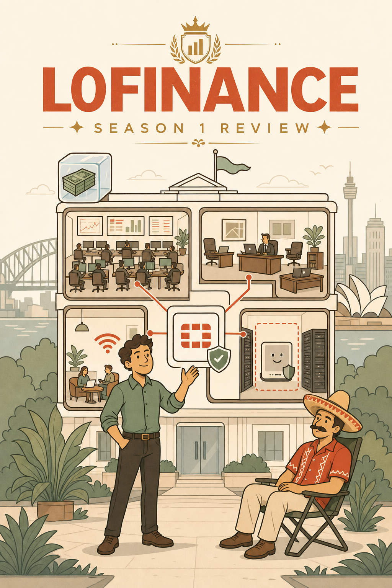
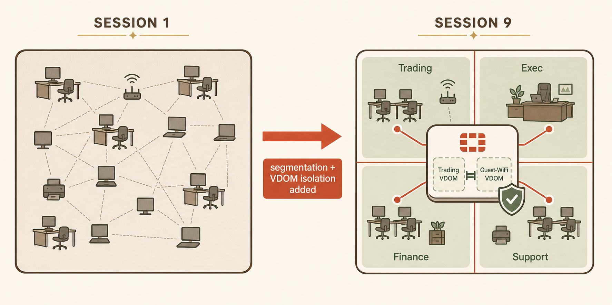
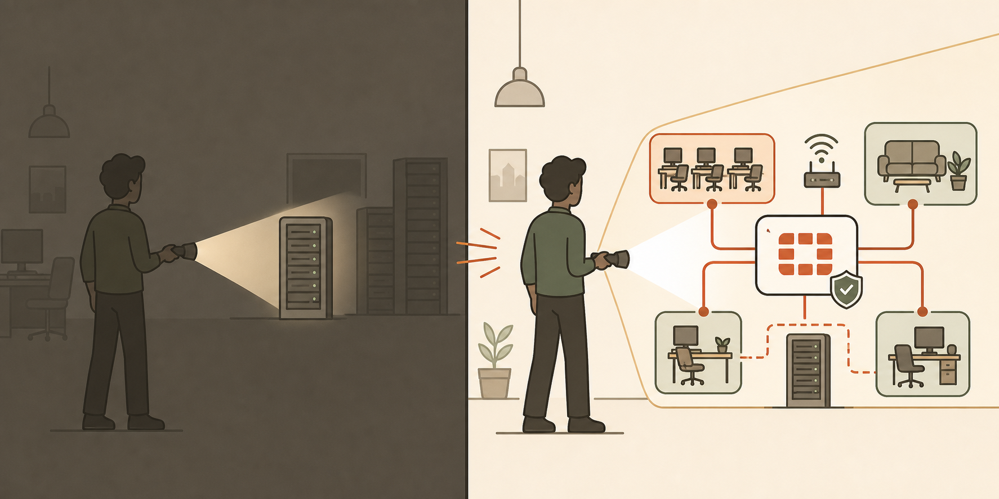
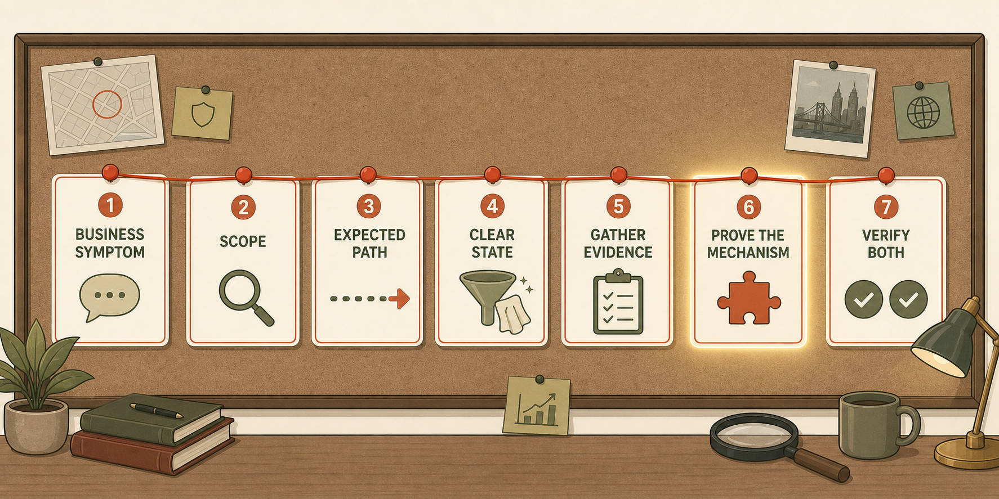
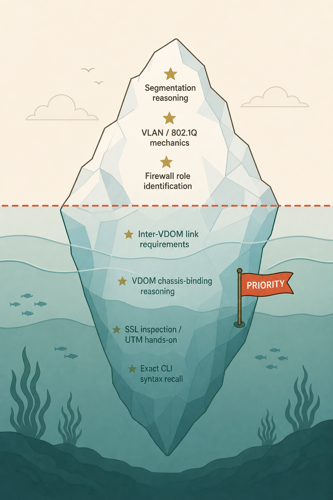
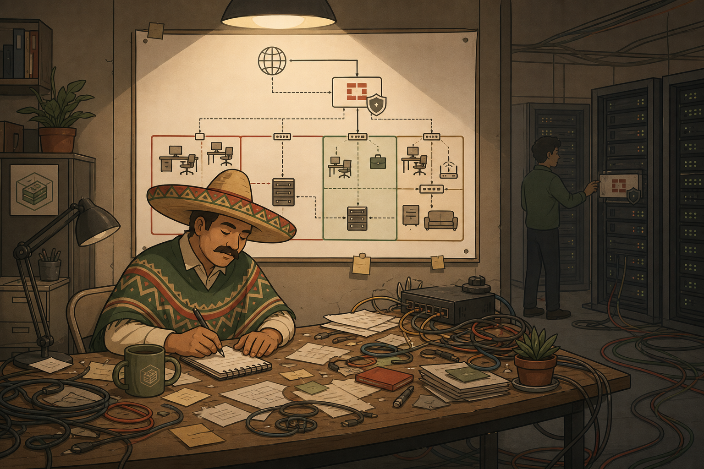
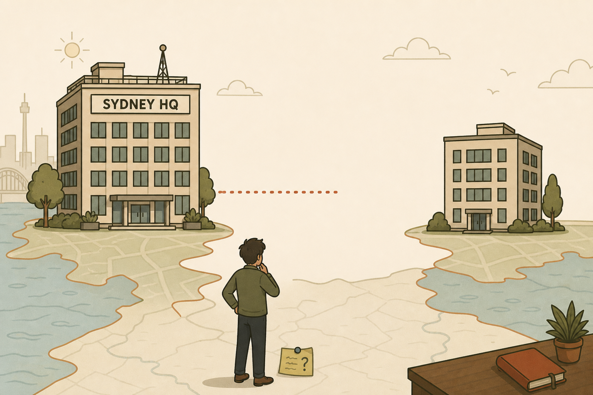

The Ops Room, After Hours
The floor's mostly empty. Riley's still at his desk, half-heartedly closing tickets. Junior is carefully re-coiling a cable he never ended up needing. Penny leans against the doorway with a coffee she's forgotten to drink.
"So," she says. "Nine weeks. One engineer who didn't know where the firewall belonged, and now Cipher's standing up in meetings for him." A pause. "That's not nothing."
Señor doesn't look up from whatever he's doing to a config file. "He's not finished."
"I didn't say finished," Penny says. "I said not nothing."
Cipher, three desks away, doesn't say anything at all — but for once, that reads as agreement rather than absence.
This document is the part that doesn't happen in the story. The honest version — what actually went well, what didn't, and what Season 2 needs to fix.

Season Recap
Season 1 covered Chapters 01 and 03 of the study guide: network security architecture (evolution of enterprise threats, NGFW/UTM concepts, the NGFW/ISFW/DCFW/DEFW role model, life of a packet) and VLANs & VDOMs in full (tagging and trunking, hardware vs software switches, VDOM types, Global Resources, inter-VDOM links, VDOM isolation).
The story moved from a first-day office tour through escalating business events — a board-approved growth plan, a doubling trading floor, a client's guest-network request, a $15k hardware quote correctly redirected into a VDOM — through a full boss-battle troubleshooting session (Session 8, "Cowboy Hat: The Quiet Tuesday"), and closed with Penny's Parramatta announcement and Cipher's first on-screen appearance of the entire course, used as a readiness gate before the student was handed design ownership of the new branch.
Engineering responsibility carried: genuine, not simulated. Sessions 5 and 8 were student-driven troubleshooting against layered faults with minimal hinting; Session 6's recommendation saved LoFinance a real $15k purchase; Session 8's fixes involved live security remediation (an active unauthorised RDP session) and resource-governance judgment, not just config repair.

Season Statistics
Figures derived directly from the nine session summaries and the knowledge register. Where a precise count could not be cleanly derived, a qualitative rating is used and marked as such.
| Metric | Result | Note |
|---|---|---|
| Blueprint coverage | 1.4 · 1.5 (partial) | "Implement enterprise networks using VLANs and VDOMs" + architecture use-case context |
| Strongest topic | VLAN mechanics & 802.1Q | Zero errors across every session it appeared in (S4, S5, S9) |
| Most assistance required | Inter-VDOM link detail · retrieval under pressure | Tracked pattern across S4, S7, S8, S9 — see Section 7 |
| Cowboy Hat performance | Both tickets, student-driven | Command selection, hypotheses, fixes, and verification all self-directed |
What Went Well
Attacker-first, systems-level reasoning
From Session 1 onward you reasoned from an attacker's or a system's perspective unprompted — producing "lateral movement," "blast radius," and "implicit trust" before being taught the terms. In real enterprise work this is the difference between configuring a firewall correctly and understanding why the configuration is secure; on the exam it powers the scenario questions that test understanding rather than syntax.
Genuine transfer, not memorisation
Session 9 Q1 is the cleanest proof: the "role = position, not hardware" model taught in Session 2 was applied to a completely new scenario (Parramatta) seven sessions later, without re-explanation. Session 4's gateway mechanism and Session 7's per-VDOM routing model transferred the same way. Scenario application over flashcard recall is exactly what the NSE7 exam is built to test.
Independent synthesis under guidance
Twice in the finale alone — the WAN round-trip consequence chain (Q4) and the VLAN+VDOM chassis-boundary connection (Q7) — you built genuinely new conclusions from first principles once anchored, rather than recalling prior answers. That's a higher-order skill than retention, and it appeared this early in the course for a reason worth respecting: real engineering intuition is forming.
Senior-engineer instincts beyond correctness
Session 8: "baseline first, cap after," and treating a stale unauthorised session as active exposure rather than housekeeping — both unprompted. Session 9: the operational cost of flat networks (broadcast noise) volunteered alongside the security argument. This judgment is exactly why Penny handed you Parramatta.
Clean recovery under correction
Across all nine sessions there is no recorded instance of doubling down after redirection. Every correction — Session 6's transparent-VDOM manageip miss, Session 8's Q2 stumble, Session 9's Q4/Q6/Q7 redirects — was absorbed and built upon immediately. On the exam this converts to catching a wrong first read before it becomes a submitted answer.
What Could Be Improved
First-answer topic-proximity bias
When a new scenario superficially resembles a recently-taught topic, the first instinct sometimes answers the familiar topic instead of the one actually asked. Session 9 Q4 is the clearest case: asked about physical VDOM placement, the first answer discussed resource contention — fresh from Session 8, factually correct, and not what was asked. The risk: exam distractors are engineered to be true-but-not-responsive. What a senior engineer does differently: restates the question's actual ask in one sentence before answering. Habit to practise: "What is this question asking — versus what does it remind me of?"
Justification precision after a correct verdict
The season's most carefully tracked pattern (full history in Section 7). The verdict layer is now reliable — but once a correct verdict is reached, the supporting mechanism can still be a plausible guess rather than the proven one (Session 9 Q6: "matching IP addressing" instead of "a route"). The risk: multi-part and select-the-mechanism questions punish an imprecise justification even when the headline answer is right — and this mistake feels correct while being incomplete, making it harder to self-catch.
CLI syntax recall lags conceptual understanding
Sessions 4–8 consistently showed the right tool selection instinct with guessed syntax: unset member "X" "Y", diagnose sys reset, diagnose sys session count were all invented forms, corrected in-session. Expected — production keyboard time is the real gap — but genuine risk on any question requiring exact syntax from memory rather than output interpretation.
The Single Biggest Improvement
Trace the evidence across the season. Session 4/5: dstintf reasoning needed prompting. Session 7 Q2: the symptom was right, the exact failure stage needed a nudge. Session 8 Q2: an outright wrong first guess ("False"), contradicting evidence you had personally gathered thirty minutes earlier — self-corrected fast, but wrong on the first pass. Session 9 Q6 — the same T/F shape, deliberately re-tested — produced an instant, correct verdict. First clean pass in four attempts across five sessions.
The knowledge didn't change — the VDOM/VLAN material was solid by Session 4. What changed is the reliability of retrieving it under the exact pressure format the exam uses: fast, standalone, no time to derive from scratch. That is precisely the skill the NSE7 tests, and it is precisely what improved most.

The Single Most Important Growth Area
Justification precision under the "verdict, then explain" format
Not because it's the biggest gap — the topic-proximity bias is arguably as common — but because it's the most exam-consequential and builds directly on momentum already proven this season.
Where it appeared: Session 9 Q6 is the cleanest example — correct verdict (False), imprecise first justification (interface addressing instead of routing).
Why it matters most: Many NSE7 questions don't stop at true/false — they require selecting or constructing the correct mechanism. A confidently-stated but imprecise justification costs marks even when the verdict is right, and it's harder to catch than an outright wrong answer because it feels correct.
Success by end of Season 2: your first-pass justification names the specific mechanism — the exact table, field, or config object — without a second redirect, matching the reliability now proven at the verdict layer.
Practise immediately: after any correct verdict, ask one extra question before speaking — "what is the ONE specific thing (a table, a field, an output value) that PROVES this, not just supports it?" The same discipline that closed the verdict-layer gap, applied one layer deeper.
Troubleshooting Method Review
Evaluated primarily from Sessions 5 and 8 (the genuine hands-on troubleshooting), with Session 9's design-review questions treated as the related "pre-build" skill: finding the flaw in a proposal before it's built.
Strong troubleshooting behaviours
- Separated compound faults — Session 5's "two questions wearing one ticket," resisting the urge to find one cause explaining everything.
- Right tool, every time — session-list-first, policy_id interpretation, reused unprompted across S4/5/8 even when exact syntax was shaky.
- Tested assumptions instead of padding defensively — Session 8's direct-delete of OpsBridge, verifying FortiOS's actual behaviour rather than assuming a cautious two-step ritual.
- Correct security posture, not just correct config — treating a stale unauthorised session as active exposure requiring remediation.
- Layer-pivot discipline — when every config-layer check came back clean, moved to resource/state diagnostics rather than re-checking the same layer harder.
Habits to improve
- An active session filter left over from Ticket 1 silently narrowed Ticket 2's results with no error raised (Session 8) — a state-hygiene discipline gap, not a knowledge gap.
- CLI syntax guesses occasionally slowed pace, though never derailed the diagnosis itself.
Senior engineer comparison
Keep: compound-ticket separation, assumption-testing, resource-governance judgment. Add: a standing habit of clearing/confirming diagnostic state at the start of each new thread, and a deliberate "what specifically proves this" step before finalising root cause — the Section 6 priority, applied to troubleshooting.
Your framework for Season 2
- Restate the business symptom in one sentence.
- Define the scope — and explicitly check whether it's one fault or more than one wearing the same ticket.
- Build the expected packet/config path before touching anything.
- Clear/confirm diagnostic state (filters, prior context) before gathering fresh evidence.
- Gather evidence layer by layer; when a whole layer comes back clean, pivot layers rather than re-checking harder.
- Before stating root cause, name the ONE field / table / output value that proves it — not just supports it.
- Fix, then verify both service recovery and root cause.

Senior Engineer Performance Review
Señor's assessment. Technically, ahead of where I'd expect after nine sessions — the architectural reasoning is genuinely solid, and more importantly it transfers to new situations instead of repeating what he was told. Troubleshooting discipline under pressure (Session 8) was clean: two tickets end-to-end with minimal hand-holding, testing his own assumptions instead of over-engineering caution, and treating an active security exposure correctly rather than as routine cleanup.
Where I'd still want a second set of eyes: exact CLI syntax under exam-style time pressure, and — this is the real one — making sure his first answer to a "prove it" question names the actual mechanism, not just a plausible-sounding one. Not a knowledge gap; a precision-under-pressure gap. Closing, but not closed.
| Dimension | Verdict |
|---|---|
| Trusted with now | Independent design ownership of a bounded, well-scoped project — which is exactly what Parramatta is. Live troubleshooting with minimal supervision, per the Session 8 record. |
| Still needs review | Deliverables requiring precise written justification (design docs, postmortems) until the precision pattern fully resolves; any exact-syntax-from-memory component. |
| Path to senior | A full season of design-and-defend work. Parramatta is the right next test — it will repeatedly force "prove it, specifically" in a real business context. |
Technical Knowledge Review
Strong
| Concept | Confidence | Evidence |
|---|---|---|
| Segmentation as forced inspection | ★★★★★ | S1, extended S9 with unprompted operational-cost synthesis |
| Firewall roles = position, not hardware | ★★★★★ | S2, transferred cleanly to a new scenario in S9 |
| VLAN tagging & trunking mechanics | ★★★★★ | S4 → S9, zero errors, five sessions apart |
| VDOM type selection (NAT vs Transparent) | ★★★★☆ | S6, S9 — clean recall both times |
Developing
| Concept | Confidence | What remains uncertain |
|---|---|---|
| Inter-VDOM link full requirements | ★★★★☆ | Verdict reliable; justification detail (route vs addressing) still needed one nudge |
| VDOM chassis-binding reasoning | ★★★★☆ | Excellent once anchored (S9); first instinct still drifts to adjacent topics — Parramatta build should cement it |
| Resource governance (Override Maximum) | ★★★☆☆ | Strong reactively (S8 diagnosis); untested proactively in a design context |
Needs reinforcement
| Concept | Confidence | Recommended review type |
|---|---|---|
| UTM engines / SSL inspection hands-on | ★★★☆☆ | Untouched since S1's conceptual pass; full re-activation due when Cipher's SSL arc begins |
| FortiGuard "config ≠ protection" mechanism | ★★★☆☆ | Named correctly, never explained in depth; force a retrieval check early Season 2 |
| Exact CLI syntax recall | ★★☆☆☆ | One dedicated low-stakes syntax drill, separate from concept teaching |

Design, Business & Communication Review
Design and business reasoning — a genuine strength
Session 6 is the flagship example: the correct VDOM-over-hardware recommendation with the honest caveat flagged (10-VDOM ceiling, shared resources) instead of overselling "free." Session 8 added "baseline first, cap after." Session 9 extended it further — identifying that a "free" VDOM reuse plan for Parramatta would actually cost real WAN throughput and add a single point of failure: a cost invisible on the whiteboard, very real in production.
Communication
Concise and accurate, occasionally under-elaborated when confident — a tendency visible since Session 1's terse "FortiGuard" answer, improved but still present under Session 9's fast pacing. Facts vs assumptions handled well: Session 8's fix was flagged as needing a monitoring follow-up rather than presented as complete, and in Session 9 you correctly self-identified tunnels as "Session 10's territory" rather than bluffing past the edge of current knowledge.
One real example, made more senior-shaped
Senior-shaped, same intent: "The link interfaces are addressed automatically at creation, so that's not the missing piece — each VDOM keeps its own independent routing table, and neither side has a route pointing traffic toward the link yet." The instinct (something beyond the policy is missing) was right; the fix is naming the specific missing mechanism rather than the first plausible one.
Exam Readiness Assessment
Likely Pass — for topics covered so far
An informed estimate, not a guaranteed result — and it applies only to the blueprint areas taught this season (1.4/1.5: architecture, VLANs, VDOMs). Central Management, Security Profiles, Routing, and VPN — the bulk of the blueprint — are not yet covered and not assessed here.
| Likely strengths | Likely risks |
|---|---|
| Scenario-application questions ("given this network, what's needed") — the season's core demonstrated skill | "Select the correct mechanism" / multi-part justification questions, where imprecision costs marks despite a correct verdict |
| Output interpretation — reading given CLI results and diagnosing the cause (consistently strong, S4–S8) | Supplying exact CLI syntax from memory (vs interpreting given output) |
| Straight T/F verdicts on drilled material — reliable as of Session 9 | Distractors engineered to be true-but-not-responsive (the topic-proximity bias) |
Personalised Preparation Plan
| Step | Do this |
|---|---|
| Priority review | Revisit session-09-complete-guide.html, specifically the Q4 / Q6 / Q7 sections — the freshest, highest-value material; reinforce it while it's warm. |
| Targeted practice | Pick any three T/F questions from Sessions 7–9. For each, write the one specific field/table/output that proves the verdict — without looking it up first. |
| Retrieval practice | Without notes, explain aloud: (1) why role labels aren't hardware · (2) why a VDOM doesn't relocate a chassis · (3) the two independent inter-VDOM link requirements. |
| Troubleshooting practice | Re-tell Session 8's Ticket 2 (Guest-WiFi outage) from memory, then check it against session-09-troubleshooting.html's decision tree — did "check geography/state before re-checking config" apply there too? |
| Ready for Season 2 when… | You can explain, unprompted and in one breath, why Parramatta needs its own local firewall presence rather than an HQ-hosted VDOM — mechanism included, not just conclusion. |
Meaningful Awards
Tested whether delete required member detachment first instead of assuming a defensive two-step ritual — and treated a stale session as active exposure only after reasoning it through, not by reflex caution. The behaviour: verify actual system behaviour before padding your process.
Recommended the VDOM path over a $15k purchase and explicitly flagged the honest caveat instead of overselling the win to Penny. The behaviour: trade-off-aware advice a stakeholder can actually trust.
Separated two independently-caused faults presented as one confusing ticket, instead of hunting for a single root cause that explained everything. The behaviour: scope before hypothesis.
Self-generated "a VDOM doesn't move a building" from first principles once anchored — then independently extended it to VLAN reach in the same session. The best piece of independent synthesis all season.
Student Profile Update
The knowledge register (knowledge-register.txt) has been fully updated alongside this retrospective: revised per-technology confidence ratings; the newly isolated two-part retrieval pattern (verdict-layer resolved / justification-layer developing); new strength categories ("independent synthesis" and "systems/operational judgment"); the first-answer topic-proximity growth area; and Season 2 teaching adjustments — shorter guided sequences, more scenario-synthesis questions, and one dedicated CLI-syntax drill. Season 2 must read that file in full before Session 10.
A Letter From Señor
When you started, you looked for the firewall.
By the end of the season, you were looking for the path the packet expected to take — and then, this week, for the building the box was actually sitting in. That's a bigger jump than it sounds like.
You still reach for the nearest familiar idea before the right one, sometimes. You still say "true" before you've said exactly why. Small things. I'm naming them because they're still there, not because they're new.
Cipher doesn't stand up for just anyone. Remember that, the next time you think nobody's watching the work.
Parramatta is yours. I will answer fewer questions this season, not more.
This is not punishment.
It is evidence.

Next Season: The Parramatta Project
Monday morning. A laptop sits alone on the desk, screen dark, a sticky note stuck to the lid in handwriting you've come to recognise: "Two sites. One network. Draw it before you cable it."
Across the floor, Junior has three napkins taped to his monitor, each showing a different — and mutually contradictory — way to connect Parramatta to HQ. He hasn't noticed they disagree with each other yet.
In the corner office, a document sits open on Cipher's screen, title visible, contents hidden: SSL Inspection — Phase 1. Nobody else has seen it. He hasn't mentioned it since the finale.
Penny walks past, coffee finally full. "Two sites now," she says, not quite a question. "Try not to make that four cables and a prayer."
Señor, from somewhere you can't quite see: "Draw the map first. The cable's the easy part."
